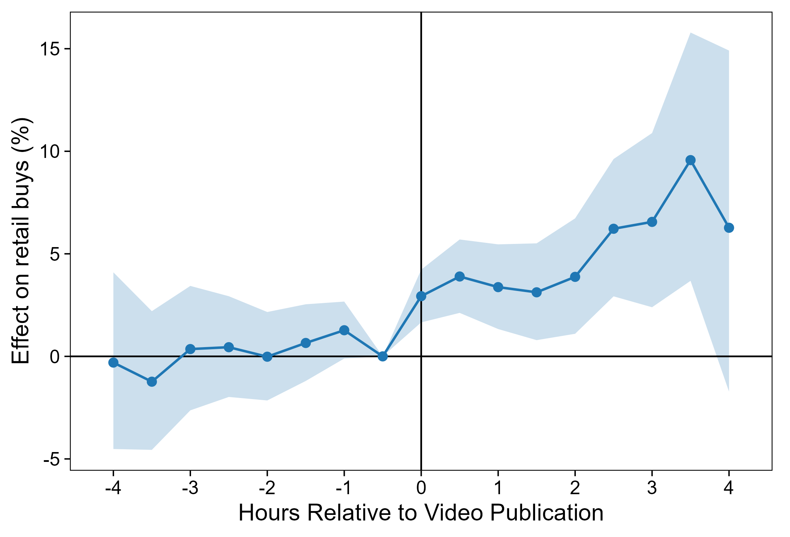

YouTube Finfluencers and Retail Investor Stock Trading
Abstract
I study stock-investing finfluencers on YouTube using a large language model to identify stock mentions and sentiment in video transcripts. Retail buying rises soon after a stock is mentioned, suggesting that finfluencers act as important retail-facing market intermediaries.
